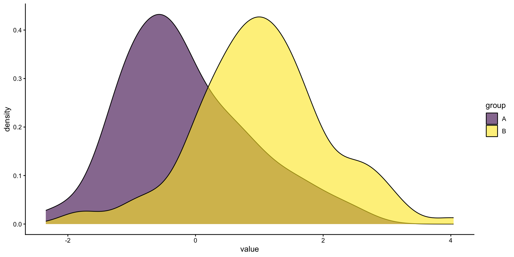
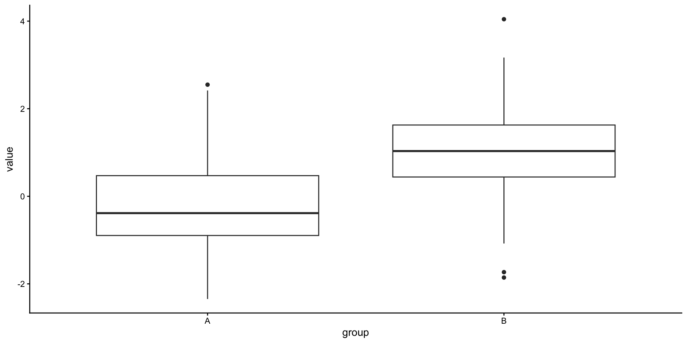
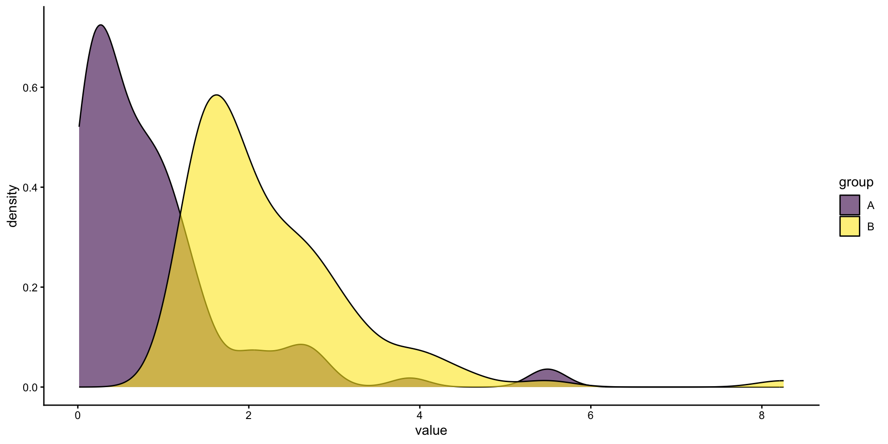
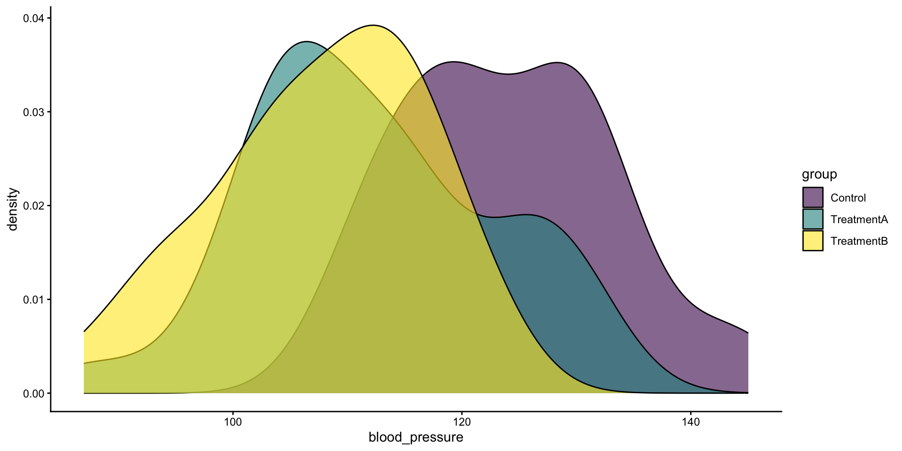
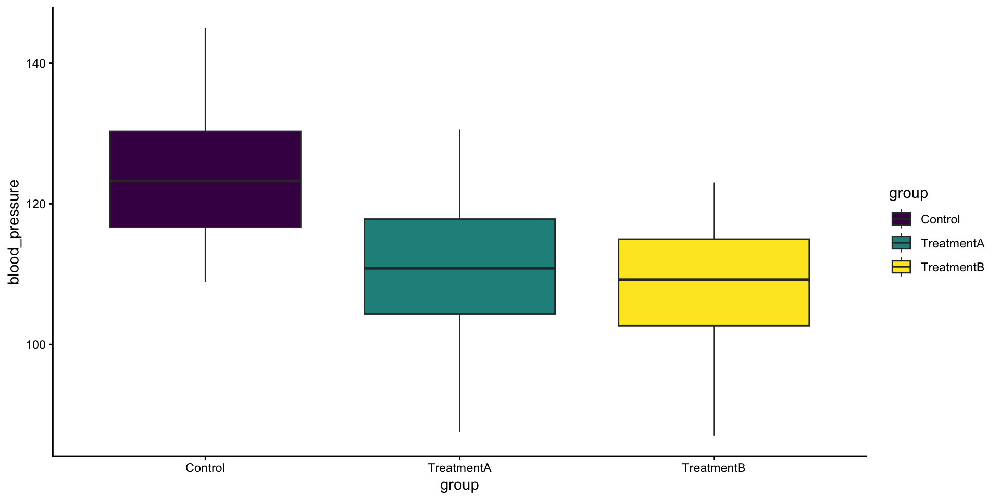
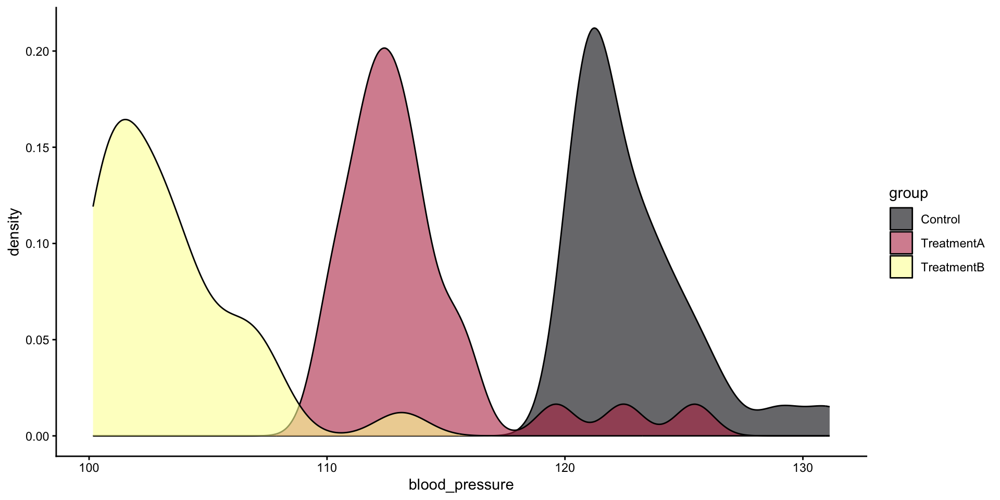

2025-10-27
One of our most commmon tasks is making simple comparisons between two (or more) groups with some measured attribute. This results from many experiments where, rightly so, researchers try to conduct simple analyses to isolate a phenomena. We have some very common tools for working with these types of comparisons that generally fall into two categories: parametric tests and non-parametric tests.
Assumptions of tests let use choose the right test for the right task and data. We will look at the assumptions about some data below.
Parametric tests are used for comparing data meeting assumptions related to normality and variance structure. We will look at t-tests (two groups) and ANOVA (analysis of variance; more than two groups). The assumptions are:
When we cant meet the normality and homogeneity of variance, we can use non-parametric tests like rank-based tests, for example: Wilcoxon rank-sum test (for two groups) or the Kruskal-Wallace test for more than two groups.
Independence
This is critical in most basic statistical tests our data our data should be. This means that the observation of one value in our dataset isn’t related to the observation of another.
For example, my blood pressure is unrelated to your blood pressure in normal circumstances.
There are common violations of these assumption:
We have tools to deal with both of these. We may discuss repeated measures.
Normality
Data should be roughly normally distributed. More important for small n (< 30)

Equal variance
The spread of the data should be approximately equal.

Continuous or ordinal
The data must minimally be in order, even if we don’t know the space between the values.
The data need not be normal, but it should be approximately qually shaped.

We are using simulated data for this case as an exercise in learning how it is done (and a bit about why we might use it).
Our imagined study is investigating how different medication regimes affect blood pressure, with the goal to lower it. Our study includes a control group (Control), a group that used regime A (TreatmentA) and third group that used regime B (TreatmentB).
We will simulate data so that we expect to see a difference.
Simulated data is widely used to investigate parameters of a study determine effective sample sizes (how many things/people do we need to test) given study design and similar.
We will make a dataset for parametric testing by sampling from the normal distribution and a dataset for non-parametric testing by sampling from the exponential distribution.
Our data has three groups in it for both parametric and non-parametric cases. Some of our tests are designed for only two cases, so we will filter the third case out.
We will have a control group, and two treatment groups (A, B) with 30 observations each.
set.seed(123456)
d.para <- tibble(
group = factor(rep(c("Control", "TreatmentA", "TreatmentB"), each = 30)),
blood_pressure = c(
rnorm(n = 30, mean = 120, sd = 10),
rnorm(n = 30, mean = 115, sd = 10),
rnorm(n = 30, mean = 110, sd = 10)
)
)
d.npara <- tibble(
group = factor(rep(c("Control", "TreatmentA", "TreatmentB"), each = 30)),
blood_pressure = c(
rexp(n = 30, rate = 0.3) + 120,
rexp(n = 30, rate = 0.3) + 110,
rexp(n = 30, rate = 0.3) + 100
)
)Parametric tests are widely used because they are powerful (they can reliably detect differences) and there are many cases where they assumptions are met. Additionally, they are robust against some of the assumptions (particularly equal variances with a high number of observations, however it should still be approximately equal!).
t-tests are used for comparing two groups when the parametric test assumptions can be met. You can also compare one group to a known mean. For example, if in a previous study the average petal length of a particular flower grown around the Slovenia coast was measured to be 2.5 cm in 2005, you could compare new set of measurements from 2025 to the mean. This is not so common and you should be sure the known mean is something very stable (i.e., not something like blood pressure we are examining here).


# two-sided hypothesis
# we use formula notation y ~ x here. It is very common in R functions
# we use this when we have a value (y) in one column and group identifier in
# another (x). We are effectively saying model y given the variable in x.
# when we move on to linear regression, x may be continuous variable as well.
#wrapping this whole statement in () forces it to print the output while
#saving the variable... Particularly useful for slides
(t.out <- t.test(blood_pressure ~ group,
data = d.para |> filter(group != "TreatmentB")))
Welch Two Sample t-test
data: blood_pressure by group
t = 4.6529, df = 56.845, p-value = 2.002e-05
alternative hypothesis: true difference in means between group Control and group TreatmentA is not equal to 0
95 percent confidence interval:
6.832462 17.157799
sample estimates:
mean in group Control mean in group TreatmentA
124.1052 112.1100 Added after class.
Paired tests compare measurements of the same subject (specimen) at multiple points in time, usually after some type of treatment. Imagine if we had selected 30 subjects to participate in our blood pressure study instead of 90 and compared a before treatment period with an after treatment period. We would want to look at the difference between each individual, rather than the differences between means of the groups.
d.paired <- tibble(
before = rnorm(n = 30, mean = 120, sd = 10),
after = rnorm(n = 30, mean = 115, sd = 10)
)
# instead of formula notation that we use elsewhere, we use to column references
# this is very useful for paired tests x, y when our values are
# stored in separate columns
t.test(d.paired$before, d.paired$after, paired = TRUE)
Paired t-test
data: d.paired$before and d.paired$after
t = 2.3574, df = 29, p-value = 0.02536
alternative hypothesis: true mean difference is not equal to 0
95 percent confidence interval:
0.9045088 12.7557580
sample estimates:
mean difference
6.830133 The mean blood pressure of subjects receiving treatment A was 12 mmHg (95 % CI: 6.8 to 17.2; p-value = < 0.0001).
When we have more than two groups, we can use analysis of variance (ANOVA). We don’t automatically get estimates of differences out of ANOVA, so we need to use another tools for that. ANOVA applies the F-test so we get an F statstic and then we can find an associated
Linear regression is the most direct way, if its extra assumption can be met.
Be careful! There are two ANOVA functions - aov() for making comparisons between groups, and anova() for comparing models (we will come back to this).
There was strong evidence that the mean blood pressure of subjects in each group was different (p = <0.0001). [nb: here we would expand our investigation and report on the differences between groups].
Comparing groups when the assumptions of parametric tests cant be met, we can try to use non-parametric tests which are often based on rank ordering rather than central tendencies.
Don’t forget to check the assumptions of non-parametric tests!
For comparing two groups.

Can similarly use “paired = TRUE” here for paired tests/repeated measures.
# two-sided hypothesis
#check ?wilcox.test for details, especially on the difference in location
#that is reported in the output
wilcox.out <- wilcox.test(blood_pressure ~ group,
#we are only comparing two groups
#so we take out treatment B to compare
#control vs. treatment A
data = d.npara |> filter(group != "TreatmentB"),
conf.int = TRUE)
wilcox.out
Wilcoxon rank sum exact test
data: blood_pressure by group
W = 857, p-value = 6.334e-12
alternative hypothesis: true location shift is not equal to 0
95 percent confidence interval:
8.466277 10.559773
sample estimates:
difference in location
9.466209 The expected difference in location of blood pressure values between control and treatment a groups is: 9.5 (95 % CI: 8.5 to 10.6; p-value < 0.0001).
The Kruskal-Wallis test is used for non-parametric cases with more than 2 groups. It corresponds to the anova test in a parametric setting. A low p-value here means there is a difference in “location parameter” for at least one group.
Unfortunately, we don’t get estimates of the differences so we need to calculate those differently. There are a few different options that are reasonably common:
Very similar setup and output to the aov() function.
There was strong evidence of a difference in blood pressure between at least two of the groups in the dataset (p < 0.0001). [nb: here we would then report on those differences from follow up tests/calculations.]